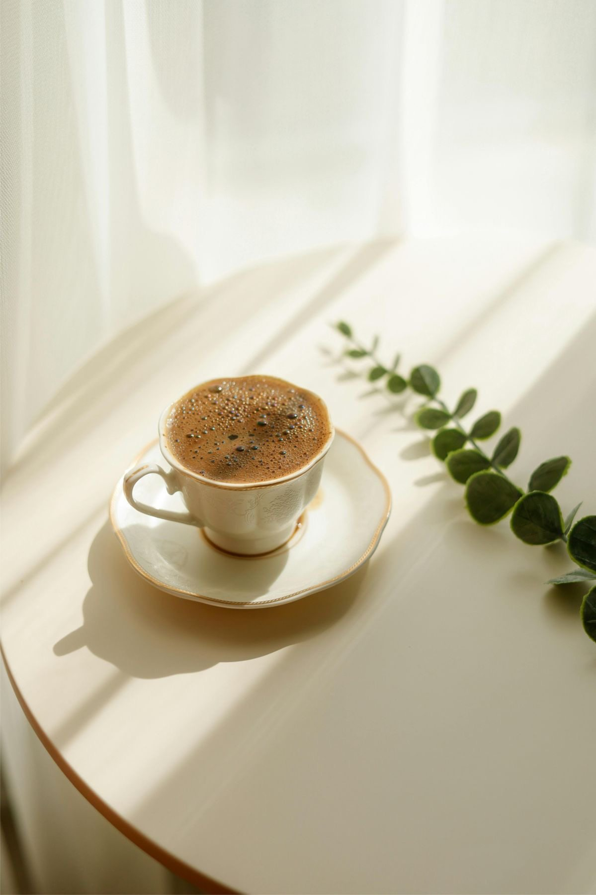

Разновидности арабики

О проекте
На сайте собраны фотографии и описания трёх разновидностей арабики. В корзине можно собрать набор для учебной дегустации.
Типика, Бурбон и Катурра относятся к одному виду кофейного растения — арабике.
С чего начать
- Откройте таблицу на странице «Сорта кофе».
- Сравните фотографии и описания растений.
- Выберите сорт для учебной дегустации.